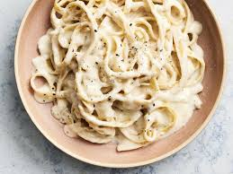

Cook the pasta: Boil water in a pot, add a pinch of salt, and cook the pasta according to the package instructions. Reserve ½ cup of pasta water before draining.
Make the sauce: In a pan over medium heat, melt the butter. Add the heavy cream and stir for 2-3 minutes until warm.
Add the cheese and seasoning: Stir in the Parmesan cheese, salt, and black pepper. Keep stirring until the cheese melts and the sauce thickens.
Combine with pasta: Add the drained pasta to the sauce, tossing to coat. If the sauce is too thick, add a little reserved pasta water to loosen it.
